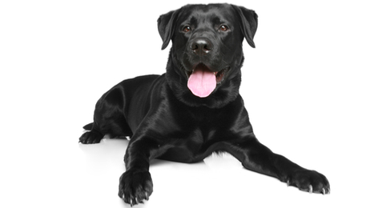

My family had our first pet dog named Diesel in August 2015. We booked him from a Labrador pedigree breeder two months before he was actually born. We were really thrilled to welcome him home eight weeks later after he was born.
Diesel's liked to play a lot and would spend several hours everyday running around the compund.We enrolled him to a puppy class where he had to learn obedience.!
Here are some toys that he liked to play with:
Labradors are very playful but also kid friendly. Click here for more on LabradorsLabrador Breed information. This is a great place to learn more on this breed!
